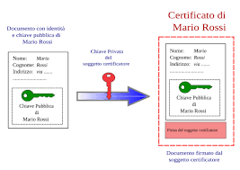
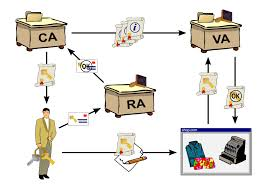
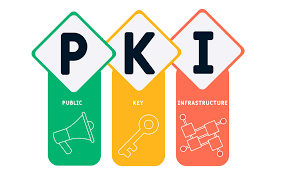

Argomento: Certificati Digitali
Nel mondo digitale, quando ricevi un messaggio firmato da qualcuno, hai bisogno della sua
chiave pubblica per verificare la firma.
Il problema è: come fai a essere sicuro che quella
chiave appartenga davvero a chi dice di essere e non a un impostore?
I certificati digitali nascono esattamente per risolvere questo problema. La chiave pubblica non viaggia da sola, ma è racchiusa in un "contenitore" firmato da un ente terzo di fiducia che ne garantisce l'autenticità.
In sostanza, il certificato digitale è l'equivalente digitale di un documento d'identità: lega in modo verificabile una chiave pubblica all'identità del suo proprietario.

Un certificato digitale contiene tre categorie di informazioni:
Il certificato digitale è fisicamente contenuto in una smartcard, una tessera con microchip
integrato che conserva in modo protetto la chiave privata del titolare.
La chiave privata non lascia mai il dispositivo e per utilizzarla è necessario inserire un PIN personale.
X.509 è lo standard ufficiale: per ottenerlo è obbligatorio rivolgersi a un ente certificatore accreditato ed è quello richiesto dalla Pubblica Amministrazione.
PGP/GPG è un formato alternativo che può essere creato autonomamente senza passare da alcun ente, ma offre un livello di fiducia inferiore perché non c'è un ente terzo che ne garantisce l'autenticità.

La RA è l'ente che si occupa dell'identificazione del richiedente prima dell'emissione del
certificato. Raccoglie i dati, verifica i documenti e accerta l'identità del soggetto.
In poche parole: la RA verifica chi sei prima che il certificato venga creato.
La CA gestisce il ciclo di vita del certificato: una volta che la RA ha verificato l'identità,
la CA genera il certificato, lo firma digitalmente con la propria chiave privata e lo pubblica online.
Si occupa anche della manutenzione e dell'eventuale revoca.
La firma della CA rende praticamente impossibile la manomissione: un malintenzionato dovrebbe violare la cifratura della CA, sostituire le chiavi e ricodificare il tutto con la chiave privata della CA, un'operazione computazionalmente impossibile.

La PKI è l'insieme di tutto ciò che ruota attorno ai certificati digitali: gli enti CA e RA,
le tecnologie che utilizzano e le politiche di gestione che applicano.
È l'infrastruttura tecnica e organizzativa preposta alla creazione, distribuzione e revoca
dei certificati di chiave pubblica.
La PKI è organizzata come una struttura ad albero: al vertice si trova la CA root, con il
massimo livello di fiducia.
La CA root può firmare i certificati di CA intermedie, che a loro
volta certificano utenti finali, creando una catena di fiducia verificabile dal basso verso l'alto.
I certificati hanno una scadenza e vanno periodicamente rinnovati.
Esistono però casi in cui
un certificato deve essere invalidato prima della scadenza:
In questi casi la CA inserisce il certificato nella CRL (Certificate Revocation List),
una lista pubblica dei certificati revocati.
Prima di considerare valido un certificato è buona norma
verificare che il suo numero di serie non compaia nell'ultima versione della CRL.
I certificati digitali sono stati l'argomento che ho presentato durante l'esposizione in classe tramite PowerPoint, ed è probabilmente quello su cui mi sono preparato meglio durante l'anno.
Non è stata una scelta casuale: l'argomento mi ha subito incuriosito perché tocca un problema
concreto e quotidiano.
Capire come funziona la catena di fiducia della PKI, il ruolo
della CA e della RA e come viene gestita la revoca mi ha dato una visione più solida di come
funziona la sicurezza nelle comunicazioni digitali reali.